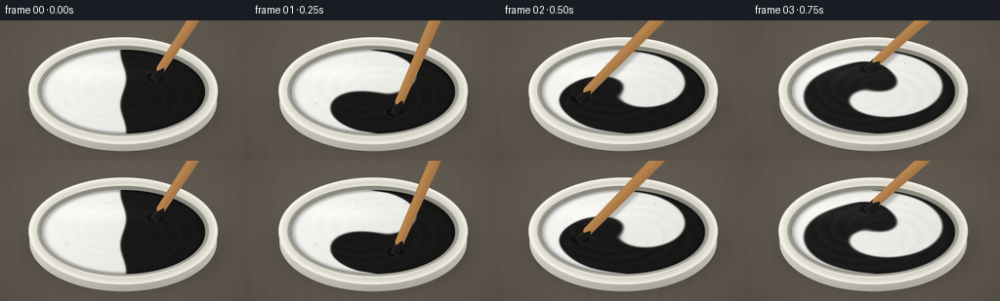
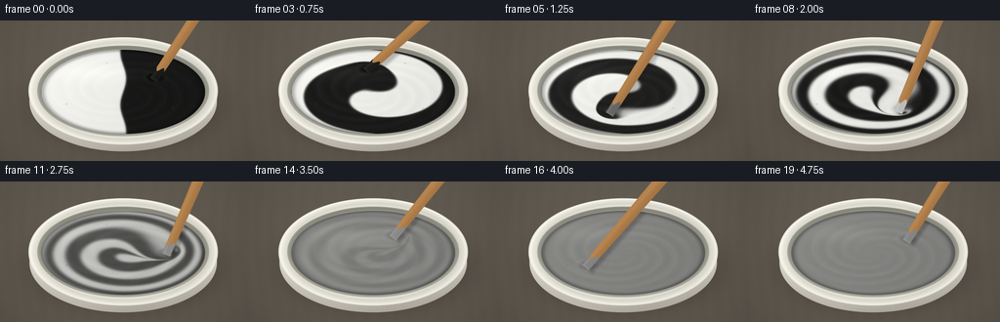

CODING AGENTS AS PIXEL WORLD MODELS
traex/GPT-6.1-Sol · material_0002
点击播放 · 原生 RGB 像素
逐轮保存的候选
回放视频、检查图与代码变化。
每份候选均可单独播放。实际图片检查记录在下方工具轨迹中。
候选 01播放与检查图
点击播放 · 原生 RGB 像素


展开代码变化
--- 上一保存版本
+++ 本次保存版本
@@ -0,0 +1,175 @@
+from pathlib import Path
+import json
+import numpy as np
+from PIL import Image, ImageDraw, ImageFilter
+from scipy.ndimage import map_coordinates, gaussian_filter
+import artifact_io
+
+ROOT = Path(__file__).resolve().parent
+SPEC = json.loads((ROOT/'task_spec.json').read_text())
+W,H=SPEC['width'],SPEC['height']
+S=3
+w,h=W*S,H*S
+Y,X=np.mgrid[0:h,0:w].astype(float)/S
+rng=np.random.default_rng(2026)
+noise=gaussian_filter(rng.normal(size=(h,w)),.65)
+# A fixed, softly lit worktop. All geometry is drawn at three times final resolution.
+base=np.zeros((h,w,3),float)
+grain=np.sin(X*.42+1.8*np.sin(Y*.03))*.8+np.sin(X*2.3)*.4+noise*.65
+vignette=1-0.18*((X-124)**2/(180**2)+(Y-60)**2/(140**2))
+for k,col in enumerate([99,92,82]):base[:,:,k]=(col+grain)*vignette
+
+def over(im,color,alpha):
+ a=np.clip(alpha,0,1)[...,None]
+ im[:]=im*(1-a)+np.asarray(color)*a
+
+def ell(cx,cy,rx,ry):return np.sqrt(((X-cx)/rx)**2+((Y-cy)/ry)**2)
+def mask(r):return np.clip((1-r)*S*40+.5,0,1)
+
+# Soft contact shadow and the rounded lower body of the mixing bowl.
+shadow=np.exp(-((ell(129,87,101,49))**4)*1.6)*.5
+shadow=gaussian_filter(shadow,3*S)
+over(base,[24,20,17],shadow)
+rbody=ell(126,83,96,51)
+body=np.zeros_like(base)
+by=np.clip((Y-77)/58,0,1)
+for k,c in enumerate([217,213,202]):
+ body[:,:,k]=c-50*by+12*np.exp(-((X-81)/49)**2)-15*np.clip((X-173)/70,0,1)
+over(base,body,mask(rbody))
+# The broad, rolled ceramic rim and curved, shadowed inner wall.
+rout=ell(126,72,97,55)
+rim=np.zeros_like(base)
+for k,c in enumerate([233,230,219]):
+ rim[:,:,k]=c+12*np.exp(-((rout-.976)/.014)**2)-13*np.exp(-((rout-.905)/.029)**2)-9*(X-50)/200+noise*.24
+over(base,rim,mask(rout))
+rin=ell(126,72,88,46.5)
+wall=np.zeros_like(base)
+for k,c in enumerate([166,165,154]):
+ wall[:,:,k]=c+24*(Y-27)/92-32*np.exp(-((rin-.955)/.048)**2)
+over(base,wall,mask(rin))
+# Small reflected light on the lip.
+lip=np.exp(-((rout-.982)/.008)**2)*np.clip((100-Y)/65,0,1)*.55
+over(base,[255,254,248],lip)
+
+# Passive pigment field, advected by a fast rotating paddle. Semi-Lagrangian
+# transport plus local diffusion produces stretched, folded viscous ribbons.
+N=360
+qy,qx=np.mgrid[0:N,0:N].astype(float)
+u=(qx/(N-1)*2-1);v=(qy/(N-1)*2-1)
+r=np.sqrt(u*u+v*v)
+inside=r<1
+paint=.5-.5*np.tanh((u+.035*np.sin(v*5))/.012)
+paint[~inside]=.5
+step=.0125
+
+def paddle(t):
+ # Rapid stirring, easing out only after the paint is blended.
+ if t<=4.0: angle=-.72+7.1*t
+ else: angle=-.72+7.1*4+7.1*(t-4)-4.0*(t-4)**2
+ radius=.52+.035*np.sin(3.2*t)
+ return radius*np.cos(angle),radius*np.sin(angle),angle
+
+px=(X-126)/84
+py=(Y-73.0)/43.2
+pr=np.sqrt(px*px+py*py)
+pa=np.arctan2(py,px)
+coords=np.array([(py+1)*(N-1)/2,(px+1)*(N-1)/2])
+fieldnoise=gaussian_filter(rng.normal(size=(h,w)),S*2.5)
+fieldnoise/=np.std(fieldnoise)
+frames=[]
+tnow=0.0
+
+for index in range(SPEC['frames']):
+ t=index/SPEC['fps']
+ while tnow+step <= t+1e-7:
+ tx,ty,ang=paddle(tnow)
+ dx=u-tx;dy=v-ty
+ edge=np.clip(1-r*r,0,1)
+ omega=6.1*np.power(edge,.85)
+ # Moving paddle locally drags the pigment and makes an asymmetric wake.
+ local=np.exp(-(dx*dx+dy*dy)/.062)
+ vx=-omega*v+(-ty*7.1)*local*.72+1.3*dy*local
+ vy=omega*u+(tx*7.1)*local*.72-1.3*dx*local
+ vx*=np.clip(edge*9,0,1);vy*=np.clip(edge*9,0,1)
+ bx=qx-vx*step*(N-1)/2
+ byy=qy-vy*step*(N-1)/2
+ paint=map_coordinates(paint,[byy,bx],order=1,mode='nearest')
+ paint=gaussian_filter(paint,.34)
+ paint[~inside]=.5
+ # Keep the two initial pigment quantities equal as transport proceeds.
+ paint[inside]+= (.5-paint[inside].mean())*.10
+ tnow+=step
+ concentration=map_coordinates(paint,coords,order=1,mode='nearest')
+ fade=np.exp(-(max(0,t-1.55)/1.42)**3)
+ concentration=.5+(concentration-.5)*fade
+ im=base.copy()
+ # The pigments are thick and semi-gloss rather than flat graphics.
+ lum=24+213*np.clip(concentration,0,1)
+ edgeShade=1-.27*np.exp(-((pr-.989)/.040)**2)
+ lighting=.95+.035*(1-px)+.014*(-py)
+ lum*=edgeShade*lighting
+ gx,gy=np.gradient(concentration)
+ grad=np.sqrt(gx*gx+gy*gy)
+ marble=np.clip(grad*27,0,1)
+ ridge=(gx*.9-gy*.5)*80
+ # Subtle spiral ridges remain in the homogeneous paint during stirring.
+ tx,ty,angle=paddle(t)
+ spiral=pa-8.5*pr+angle*.26
+ relief=np.sin(spiral*4)*np.exp(-((pr-.56)/.38)**2)*(1.2+1.3*min(t,1))
+ lum+=ridge+relief+fieldnoise*.35
+ glint=np.exp(-((px+.34)/.55)**2-((py+.45)/.20)**2)*9
+ glint+=np.maximum(0,np.sin(spiral*4+.7))**18*np.exp(-((pr-.59)/.31)**2)*3.6
+ # A soft depression, crest, and wake where the submerged paddle moves.
+ d2=(px-tx)**2+(py-ty)**2
+ lum-=np.exp(-d2/.012)*22
+ wake=np.exp(-((np.sqrt(d2)-.13)/.038)**2)*7
+ lum+=wake
+ color=np.stack([lum*1.013+glint,lum*1.012+glint,lum*.993+glint],axis=-1)
+ over(im,color,mask(pr))
+ # Small, stable paint bubbles catch the studio light.
+ for bx,byy,br in [(-.69,.29,.011),(.61,.39,.008),(-.2,-.68,.007),(.39,-.68,.009)]:
+ rr=np.sqrt((px-bx)**2+(py-byy)**2)
+ ring=np.exp(-((rr-br)/.0035)**2)*.30
+ over(im,[55,55,53],ring)
+ shine=np.exp(-((px-bx+br*.3)**2+(py-byy+br*.5)**2)/(.003**2))*.65
+ over(im,[236,235,229],shine)
+ # A flat wooden paint paddle, held above the top edge by an unseen hand.
+ # Its painted lower tip remains visibly submerged while it travels around.
+ tip=np.array([126+tx*84,73+ty*43.2])
+ top=np.array([195+17*np.cos(angle+.45),-19+3*np.sin(angle)])
+ dv=top-tip;length=np.linalg.norm(dv);along=dv/length
+ side=np.array([-along[1],along[0]])
+ relx=X-tip[0];rely=Y-tip[1]
+ z=relx*along[0]+rely*along[1]
+ cross=relx*side[0]+rely*side[1]
+ halfwidth=4.4+.015*np.clip(z,0,length)
+ stickmask=np.clip((halfwidth-np.abs(cross))*S+.5,0,1)*np.clip((z+3.5)*S+.5,0,1)*np.clip((length-z)*S+.5,0,1)
+ # Cast shadow onto wet paint, falling to lower right.
+ shx=(X-tip[0]-2.4)*side[0]+(Y-tip[1]-3.0)*side[1]
+ shz=(X-tip[0]-2.4)*along[0]+(Y-tip[1]-3.0)*along[1]
+ sh=np.exp(-(shx/(halfwidth+1.5))**6)*np.clip((shz+4)/3,0,1)*np.clip((length-shz)/4,0,1)*.26*mask(pr)
+ over(im,[24,23,22],gaussian_filter(sh,S*.8))
+ woodgrain=np.sin(cross*5.1+.07*z+np.sin(z*.19))*.9+np.sin(cross*12.3+z*.037)*.5
+ woodtone=woodgrain+5*np.exp(-((cross+2)/1.9)**2)-19*np.clip((cross+3)/10,0,1)
+ wood=np.stack([180+woodtone,130+woodtone*.87,77+woodtone*.63],axis=-1)
+ # Fine longitudinal pores and warm rounded edge highlight.
+ pores=np.maximum(0,np.sin(cross*10+np.sin(z*.032)))**20*2.4
+ wood-=pores[...,None]
+ wetdepth=10+3*np.sin(cross*.7)+1.0*np.sin(t*2)
+ wet=np.clip((wetdepth-z)*1.3,0,1)
+ tipc=float(map_coordinates(paint,[[int((ty+1)*(N-1)/2)],[int((tx+1)*(N-1)/2)]],order=1)[0])
+ tipc=.5+(tipc-.5)*fade
+ wetlum=24+213*tipc
+ wetpaint=np.stack([wetlum+4+woodtone*.2,wetlum+4+woodtone*.2,wetlum+2+woodtone*.2],axis=-1)
+ wood=wood*(1-wet[...,None])+wetpaint*wet[...,None]
+ # Light runs along the smooth, paint-coated side of the paddle.
+ wood+=np.exp(-((cross+2.6)/.55)**2)[...,None]*wet[...,None]*11
+ over(im,wood,stickmask)
+ # Meniscus over the submerged bottom, not over the entire stick.
+ meniscus=np.exp(-((z+2.1)/.6)**2)*np.exp(-(cross/5)**6)*mask(pr)*.5
+ over(im,[wetlum+20]*3,meniscus)
+ out=Image.fromarray(np.uint8(np.clip(im,0,255))).resize((W,H),Image.Resampling.LANCZOS)
+ frames.append(np.asarray(out))
+
+artifact_io.save(np.stack(frames),ROOT)
+print('Saved',len(frames),'RGB frames at',W,'x',H)
可观测工具轨迹
实际执行的命令与返回图片。
命令 1exit 0
/bin/bash -lc 'ls -la && cat prompt.txt && cat GENERATION_RULES.md && cat task_spec.json'
命令 2exit 0
/bin/bash -lc "cat artifact_io.py && python - <<'PY' import importlib.util for m in ['numpy','PIL','scipy']: print(m, bool(importlib.util.find_spec(m))) PY"
命令 3exit 0
/bin/bash -lc "cat > generate.py <<'PY'
from pathlib import Path
import json
import numpy as np
from PIL import Image, ImageDraw, ImageFilter
from scipy.ndimage import map_coordinates, gaussian_filter
import artifact_io
ROOT = Path(__file__).resolve().parent
SPEC = json.loads((ROOT/'task_spec.json').read_text())
W,H=SPEC['width'],SPEC['height']
S=3
w,h=W*S,H*S
Y,X=np.mgrid[0:h,0:w].astype(float)/S
rng=np.random.default_rng(2026)
noise=gaussian_filter(rng.normal(size=(h,w)),.65)
# A fixed, softly lit worktop. All geometry is drawn at three times final resolution.
base=np.zeros((h,w,3),float)
grain=np.sin(X*.42+1.8*np.sin(Y*.03))*.8+np.sin(X*2.3)*.4+noise*.65
vignette=1-0.18*((X-124)**2/(180**2)+(Y-60)**2/(140**2))
for k,col in enumerate([99,92,82]):base[:,:,k]=(col+grain)*vignette
def over(im,color,alpha):
a=np.clip(alpha,0,1)[...,None]
im[:]=im*(1-a)+np.asarray(color)*a
def ell(cx,cy,rx,ry):return np.sqrt(((X-cx)/rx)**2+((Y-cy)/ry)**2)
def mask(r):return np.clip((1-r)*S*40+.5,0,1)
# Soft contact shadow and the rounded lower body of the mixing bowl.
shadow=np.exp(-((ell(129,87,101,49))**4)*1.6)*.5
shadow=gaussian_filter(shadow,3*S)
over(base,[24,20,17],shadow)
rbody=ell(126,83,96,51)
body=np.zeros_like(base)
by=np.clip((Y-77)/58,0,1)
for k,c in enumerate([217,213,202]):
body[:,:,k]=c-50*by+12*np.exp(-((X-81)/49)**2)-15*np.clip((X-173)/70,0,1)
over(base,body,mask(rbody))
# The broad, rolled ceramic rim and curved, shadowed inner wall.
rout=ell(126,72,97,55)
rim=np.zeros_like(base)
for k,c in enumerate([233,230,219]):
rim[:,:,k]=c+12*np.exp(-((rout-.976)/.014)**2)-13*np.exp(-((rout-.905)/.029)**2)-9*(X-50)/200+noise*.24
over(base,rim,mask(rout))
rin=ell(126,72,88,46.5)
wall=np.zeros_like(base)
for k,c in enumerate([166,165,154]):
wall[:,:,k]=c+24*(Y-27)/92-32*np.exp(-((rin-.955)/.048)**2)
over(base,wall,mask(rin))
# Small reflected light on the lip.
lip=np.exp(-((rout-.982)/.008)**2)*np.clip((100-Y)/65,0,1)*.55
over(base,[255,254,248],lip)
# Passive pigment field, advected by a fast rotating paddle. Semi-Lagrangian
# transport plus local diffusion produces stretched, folded viscous ribbons.
N=360
qy,qx=np.mgrid[0:N,0:N].astype(float)
u=(qx/(N-1)*2-1);v=(qy/(N-1)*2-1)
r=np.sqrt(u*u+v*v)
inside=r<1
paint=.5-.5*np.tanh((u+.035*np.sin(v*5))/.012)
paint[~inside]=.5
step=.0125
def paddle(t):
# Rapid stirring, easing out only after the paint is blended.
if t<=4.0: angle=-.72+7.1*t
else: angle=-.72+7.1*4+7.1*(t-4)-4.0*(t-4)**2
radius=.52+.035*np.sin(3.2*t)
return radius*np.cos(angle),radius*np.sin(angle),angle
px=(X-126)/84
py=(Y-73.0)/43.2
pr=np.sqrt(px*px+py*py)
pa=np.arctan2(py,px)
coords=np.array([(py+1)*(N-1)/2,(px+1)*(N-1)/2])
fieldnoise=gaussian_filter(rng.normal(size=(h,w)),S*2.5)
fieldnoise/=np.std(fieldnoise)
frames=[]
tnow=0.0
for index in range(SPEC['frames']):
t=index/SPEC['fps']
while tnow+step <= t+1e-7:
tx,ty,ang=paddle(tnow)
dx=u-tx;dy=v-ty
edge=np.clip(1-r*r,0,1)
omega=6.1*np.power(edge,.85)
# Moving paddle locally drags the pigment and makes an asymmetric wake.
local=np.exp(-(dx*dx+dy*dy)/.062)
vx=-omega*v+(-ty*7.1)*local*.72+1.3*dy*local
vy=omega*u+(tx*7.1)*local*.72-1.3*dx*local
vx*=np.clip(edge*9,0,1);vy*=np.clip(edge*9,0,1)
bx=qx-vx*step*(N-1)/2
byy=qy-vy*step*(N-1)/2
paint=map_coordinates(paint,[byy,bx],order=1,mode='nearest')
paint=gaussian_filter(paint,.34)
paint[~inside]=.5
# Keep the two initial pigment quantities equal as transport proceeds.
paint[inside]+= (.5-paint[inside].mean())*.10
tnow+=step
concentration=map_coordinates(paint,coords,order=1,mode='nearest')
fade=np.exp(-(max(0,t-1.55)/1.42)**3)
concentration=.5+(concentration-.5)*fade
im=base.copy()
# The pigments are thick and semi-gloss rather than flat graphics.
lum=24+213*np.clip(concentration,0,1)
edgeShade=1-.27*np.exp(-((pr-.989)/.040)**2)
lighting=.95+.035*(1-px)+.014*(-py)
lum*=edgeShade*lighting
gx,gy=np.gradient(concentration)
grad=np.sqrt(gx*gx+gy*gy)
marble=np.clip(grad*27,0,1)
ridge=(gx*.9-gy*.5)*80
# Subtle spiral ridges remain in the homogeneous paint during stirring.
tx,ty,angle=paddle(t)
spiral=pa-8.5*pr+angle*.26
relief=np.sin(spiral*4)*np.exp(-((pr-.56)/.38)**2)*(1.2+1.3*min(t,1))
lum+=ridge+relief+fieldnoise*.35
glint=np.exp(-((px+.34)/.55)**2-((py+.45)/.20)**2)*9
glint+=np.maximum(0,np.sin(spiral*4+.7))**18*np.exp(-((pr-.59)/.31)**2)*3.6
# A soft depression, crest, and wake where the submerged paddle moves.
d2=(px-tx)**2+(py-ty)**2
lum-=np.exp(-d2/.012)*22
wake=np.exp(-((np.sqrt(d2)-.13)/.038)**2)*7
lum+=wake
color=np.stack([lum*1.013+glint,lum*1.012+glint,lum*.993+glint],axis=-1)
over(im,color,mask(pr))
# Small, stable paint bubbles catch the studio light.
for bx,byy,br in [(-.69,.29,.011),(.61,.39,.008),(-.2,-.68,.007),(.39,-.68,.009)]:
rr=np.sqrt((px-bx)**2+(py-byy)**2)
ring=np.exp(-((rr-br)/.0035)**2)*.30
over(im,[55,55,53],ring)
shine=np.exp(-((px-bx+br*.3)**2+(py-byy+br*.5)**2)/(.003**2))*.65
over(im,[236,235,229],shine)
# A flat wooden paint paddle, held above the top edge by an unseen hand.
# Its painted lower tip remains visibly submerged while it travels around.
tip=np.array([126+tx*84,73+ty*43.2])
top=np.array([195+17*np.cos(angle+.45),-19+3*np.sin(angle)])
dv=top-tip;length=np.linalg.norm(dv);along=dv/length
side=np.array([-along[1],along[0]])
relx=X-tip[0];rely=Y-tip[1]
z=relx*along[0]+rely*along[1]
cross=relx*side[0]+rely*side[1]
halfwidth=4.4+.015*np.clip(z,0,length)
stickmask=np.clip((halfwidth-np.abs(cross))*S+.5,0,1)*np.clip((z+3.5)*S+.5,0,1)*np.clip((length-z)*S+.5,0,1)
# Cast shadow onto wet paint, falling to lower right.
shx=(X-tip[0]-2.4)*side[0]+(Y-tip[1]-3.0)*side[1]
shz=(X-tip[0]-2.4)*along[0]+(Y-tip[1]-3.0)*along[1]
sh=np.exp(-(shx/(halfwidth+1.5))**6)*np.clip((shz+4)/3,0,1)*np.clip((length-shz)/4,0,1)*.26*mask(pr)
over(im,[24,23,22],gaussian_filter(sh,S*.8))
woodgrain=np.sin(cross*5.1+.07*z+np.sin(z*.19))*.9+np.sin(cross*12.3+z*.037)*.5
woodtone=woodgrain+5*np.exp(-((cross+2)/1.9)**2)-19*np.clip((cross+3)/10,0,1)
wood=np.stack([180+woodtone,130+woodtone*.87,77+woodtone*.63],axis=-1)
# Fine longitudinal pores and warm rounded edge highlight.
pores=np.maximum(0,np.sin(cross*10+np.sin(z*.032)))**20*2.4
wood-=pores[...,None]
wetdepth=10+3*np.sin(cross*.7)+1.0*np.sin(t*2)
wet=np.clip((wetdepth-z)*1.3,0,1)
tipc=float(map_coordinates(paint,[[int((ty+1)*(N-1)/2)],[int((tx+1)*(N-1)/2)]],order=1)[0])
tipc=.5+(tipc-.5)*fade
wetlum=24+213*tipc
wetpaint=np.stack([wetlum+4+woodtone*.2,wetlum+4+woodtone*.2,wetlum+2+woodtone*.2],axis=-1)
wood=wood*(1-wet[...,None])+wetpaint*wet[...,None]
# Light runs along the smooth, paint-coated side of the paddle.
wood+=np.exp(-((cross+2.6)/.55)**2)[...,None]*wet[...,None]*11
over(im,wood,stickmask)
# Meniscus over the submerged bottom, not over the entire stick.
meniscus=np.exp(-((z+2.1)/.6)**2)*np.exp(-(cross/5)**6)*mask(pr)*.5
over(im,[wetlum+20]*3,meniscus)
out=Image.fromarray(np.uint8(np.clip(im,0,255))).resize((W,H),Image.Resampling.LANCZOS)
frames.append(np.asarray(out))
artifact_io.save(np.stack(frames),ROOT)
print('Saved',len(frames),'RGB frames at',W,'x',H)
PY
python generate.py"命令 4exit 0
/bin/bash -lc "python - <<'PY'
from pathlib import Path
import numpy as np
from PIL import Image
p=Path('.')
a=np.load(p/'pixels.npz')['pixels']
assert a.shape==(144,256,20)
assert len(list((p/'frames').glob('*.png')))==20
assert Image.open(p/'frames/19.png').mode=='RGB'
for f in ['generate.py','pixels.npz','index.html','inspection.png']:
print(f, (p/f).stat().st_size, 'bytes')
PY"视觉工具实际返回图片 1

保存候选 1 份；完成命令 4 次；可验证图片返回 1 张。原始 API 响应与完整日志保留在本地。